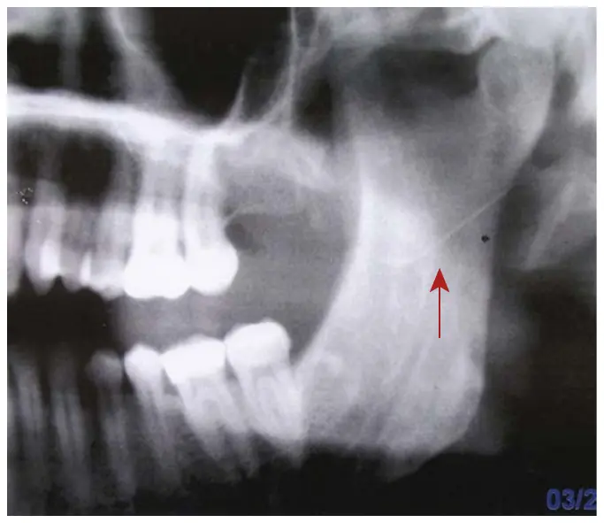

نسخه استخراجشده؛ ترجمه یا تأیید علمی انجام نشده است. وضعیت: captured
قدم 1 · theory
جمعبندی: چهار عارضهی موضعی
شکستن سوزن: تقریباً همیشه سوزن کوتاه یا اولتراشورت گیج ۳۰، ورود تا هاب، در بلاک عصب آلوئولار تحتانی (IANB) یا آلوئولار فوقانی خلفی (PSA)، و شکستن از هاب. سوزن بلند (حدود ۳۲ میلیمتر) کمتر تا ته فرو میرود؛ اگر ۵ میلیمتر یا بیشتر از تکه پیدا باشد، با هموستات بیرون میآید. تکهی پنهان ممکن است جابهجا شود: ارجاع فوری.
خم کردن سوزن: در PDL یا اینتراپالپال که سوزن فقط ۲ تا ۴ میلیمتر وارد بافت نرم میشود یا اصلاً وارد نمیشود، گاهی لازم و کمخطر است؛ در IANB و PSA هرگز لازم نیست.
درد تزریق: حرف ناسنجیده، سوزن کند، تزریق تند و خار نوک سوزن. سوزن تیز، بیحسی سطحی، ۱ میلیلیتر در دقیقه و محلول در دمای اتاق.
سوزش: pH (ساده حدود ۶٫۵، دارای تنگکننده ۳٫۵ تا ۴٫۵)، تزریق تند، محلول آلوده، محلول داغ. سوزش pH با شروع بیحسی میرود.
بیحسی طولانی: چند ساعت بیشتر مشکلی نیست؛ روزها و بیشتر یعنی پارستزی، که بیشتر عصب لینگوال را درگیر میکند. خودت حرف بزن، ثبت کن، معاینه کن و هر ۲ ماه پیگیری کن. پارستزی را فقط وقتی ۹ ماه یا بیشتر مانده دائمی بدان. اگر پس از ۱ تا ۲ ماه بهبودی نبود، بیمهی مسئولیت حرفهای را در جریان بگذار.
هر عارضهی بیحسی را در پرونده بنویس، و اگر ماندگار شد، در هر ویزیت یادداشت تازه بگذار.

سوزن شکستهی باقیمانده پس از IANB (فلش)؛ سوزن را تا هاب فرو نبر و خمش نکن. (Malamed. Handbook of Local Anesthesia, 7th ed. — Fig. 6.14)
قدم 2 · question
اگر ۵ میلیمتر یا بیشتر از تکهی سوزن شکسته در دهان پیدا باشد، معمولاً میتوان آن را با هموستات بیرون آورد.
۰۱
صحیح
۰۲
غلط
قدم 3 · question
بیماری میگوید سالها پیش تکهی سوزنی در فکش مانده و چون دردی ندارد، نمیخواهد پیگیری کند. کدام توضیح درست است؟
۰۱
تا وقتی درد ندارد، تکهی فلزی کاملاً بیخطر است و بررسی لازم ندارد
۰۲
تکه ممکن است جابهجا شود و به عصب یا رگ آسیب بزند؛ بررسی جراح لازم است
۰۳
تکه پس از یک سال در بافت حل میشود و دیگر در هیچ تصویربرداریای دیده نمیشود
۰۴
فقط اگر تکه از جنس نیکل باشد خطرناک است و فولاد مشکلی نمیسازد
قدم 4 · question
همکاری میگوید: «من در PDL سوزن را خم میکنم، پس در IANB هم خم کردن اشکالی ندارد.» ایراد استدلالش کجاست؟
۰۱
سوزن در IANB عمیق در بافت نرم میرود و خم کردن آن را مستعد شکستن میکند
۰۲
در PDL هم خم کردن ممنوع است و همانجا هم سوزن باید صاف بماند
۰۳
در IANB خم کردن فقط وقتی اشکال دارد که سوزن گیج ۲۵ باشد، نه وقتی گیج ۲۷ یا ۳۰ است
۰۴
در IANB خم کردن اشکالی ندارد، به شرط آنکه سوزن تا هاب وارد بافت شود
قدم 5 · question
در بررسی سوزنهای شکستهای که با جراحی بیرون آمدهاند، دربارهی نقص ساخت چه یافتهای به دست آمده است؟
۰۱
بیشترشان ترک ریز کارخانهای در میانهی تنهی سوزن داشتهاند
۰۲
نقص ساخت پیدا نشده و عاملهای کاربرد سوزن مهمترند
۰۳
همهشان از یک سازندهی خاص با فولاد بیکیفیت بودهاند
۰۴
نقص ساخت در هاب علت اصلی شکستنها بوده است
قدم 6 · question
کدام مورد از علتهای شناختهشدهی درد هنگام تزریق نیست؟
۰۱
تزریق کارپول در دمای اتاق
۰۲
سوزنی که چند بار وارد مخاط شده
۰۳
تزریق سریع محلول
۰۴
خار نوک سوزن
قدم 7 · question
هر سوزش هنگام تزریق، حتی اگر با شروع بیحسی از بین برود، باید با داروی ضدالتهاب درمان شود.
۰۱
صحیح
۰۲
غلط
قدم 8 · question
تزریق کامی، اگر پس از بیحسی سطحی و فشار روی محل و خیلی آرام انجام شود، میتواند تقریباً بیدرد باشد.
۰۱
صحیح
۰۲
غلط
قدم 9 · question
در پارستزی پس از تزریق بیحسی، عصب آلوئولار تحتانی بسیار بیشتر از عصب لینگوال درگیر میشود.
۰۱
صحیح
۰۲
غلط
قدم 10 · question
بیمار دچار پارستزی ممکن است بیآنکه بفهمد، با غذای داغ یا مواد شیمیایی بافت بیحس را بسوزاند.
۰۱
صحیح
۰۲
غلط
قدم 11 · question
پارستزیای که ۸ هفته پس از تزریق هنوز کامل خوب نشده، دائمی است و دیگر امیدی به بهبود ندارد.
۰۱
صحیح
۰۲
غلط
قدم 12 · question
اگر پارستزی بیمار پس از چه مدتی بدون نشانهی بهبود ادامه یافت، بهتر است بیمهی مسئولیت حرفهای را در جریان بگذاری؟
۰۱
فقط پس از ۹ ماه
۰۲
پس از ۱ تا ۲ ماه بدون بهبود آشکار
۰۳
همان ساعت اول پس از تماس بیمار
۰۴
هرگز، چون پارستزی مسئولیت حقوقی ندارد
قدم 13 · question
اگر عارضهی بیحسی ماندگار شود، یک یادداشت در روز رخداد کافی است و ثبت دوباره در ویزیتهای بعدی لازم نیست.
۰۱
صحیح
۰۲
غلط
قدم 14 · question
بیماری سه روز پس از IANB تلفن میزند که زبانش هنوز بیحس است، مزهی غذا را کم حس میکند و یک بار زبانش را گاز گرفته. هنگام تزریق هم از «برقگرفتگی» گفته بود. کدام برنامه کاملتر است؟
۰۱
همان روز IANB دوباره بزنی تا ببینی عصب آسیبدیدهی زبان هنوز به تزریق بیحسی پاسخ میدهد یا نه
۰۲
منشی برای یک ماه بعد وقت بدهد، چون بیشتر پارستزیها بدون هیچ درمانی خودشان خوب میشوند
۰۳
خودت حرف بزنی، معاینه و ثبت کنی، مراقبت از زبان را آموزش دهی و هر ۲ ماه پیگیری کنی
۰۴
به او بگویی عصب بریده شده و فوراً برای جراحی ترمیم عصب ارجاع دهی